STORES Product Blog
https://product.st.inc/
こだわりを持ったお商売を支える「STORES」のテクノロジー部門のメンバーによるブログです。
フィード
STORES 予約の契約管理をZuoraに移行しました
STORES Product Blog
はじめに こんにちは。 STORES でエンジニアをやっている asibi3Q です。 週末は山に登って下界から離れる生活を送っています。 今回は去年1年を通して、STORES 予約の契約管理をサブスクリプション管理 SaaS である Zuora に移行した話について書きます。 移行の背景 STORES には多くのプロダクトが存在しますが、元々は別々の会社で作られたプロダクトで契約管理方法も異なります。 そのため、 プロダクト毎に請求方法やオペレーションが異なることで、オペレーションコストや開発コストが大きい 請求業務の属人化と手作業の多さによる人的リソースの負担増加 といった運用上の課題が多…
2日前
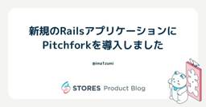
新規のRailsアプリケーションにPitchforkを導入しました 39
39
STORES Product Blog
こんにちは、エンジニアのima1zumiです。私たちのチームでは、STORES の新規プロダクト開発においてRackアプリケーションサーバとしてPitchforkを選定しました。本記事では、その選定背景、具体的な設定内容や運用上の知見をまとめてご紹介します。 なお、本記事執筆時点ではPitchforkの大きな特徴であるrefork機能は導入していません。 Pitchfork選定の背景と理由 Pitchforkとは Pitchforkは、Shopifyが開発・メンテナンスを行っているRackアプリケーション用のHTTPサーバです。広く利用されているUnicornをベースとしたフォークであり、pr…
3日前
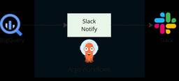
BigQuery→Slack通知をテンプレート化してみた
STORES Product Blog
こんにちは、データ本部のssxotaです。STORESでデータ基盤の保守開発を担当しています。 今回は、BigQueryから集計したデータをSlackで通知する仕組みをテンプレート化し、通知内容の追加や更新を容易にできるようにしたので紹介します。 これまで、BigQueryからのSlack通知は、Argo Workflowsを利用して実行されていました。ワークフロー内でBigQueryにクエリを発行し、結果を文字列に加工してSlack APIを呼び出すことで、社内の経営指標を日次で通知する仕組みが動いていました。 Slack通知構成図 今回、こちらの記事でも紹介しているスタンダードプランの開始…
4日前
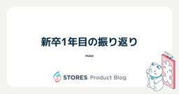
新卒1年目の振り返り
STORES Product Blog
新卒2年目のエンジニアのmaseです。 1年目が終わり気づけば3ヶ月経ってしまいましたが、新卒1年目でやったことを振り返っていこうと思います！ 私は、内定者アルバイトで入社してから2024年12月まで STORES 予約 のチーム配属で開発を行い、2025年1月からはプロダクト統合に関わるチームで開発を行っています。 1年間を通して本当にいろいろなことを学ぶことができました。その中でも特に印象深いものについて書いていきます！ STORES 予約 : 外部APIの仕様変更に伴う改修 初めてチームで設計からリリースまでしっかり関わることになったプロジェクトでした。 この開発では、リリースに向けて責…
4日前
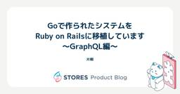
Goで作られたシステムをRuby on Railsに移植しています 〜GraphQL編〜 2
STORES Product Blog
STORES でエンジニアをしている片桐です。 先日、「Goで作られたシステムをRuby on Railsに移植しています」という記事を投稿させていただきました。 product.st.inc product.st.inc ベース部分の実装について別ブログで紹介したいと書かせていただきましたが、今回はその中から「GraphQLの移行基盤としてのGraphQL Stitchingの導入」について紹介させていただきます。 GraphQL Stitching の導入 GraphQL Stitchingの実現には、すでに弊社内で採用実績のある graphql-stitching gemを利用します。 …
5日前
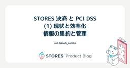
STORES 決済 と PCI DSS (1) 現状と効率化 - 情報の集約と管理 2
STORES Product Blog
こんにちは。セキュリティ本部の soh です。 昨年から STORES 決済 の PCI DSS 対応 を、バックエンドエンジニアやコーポレート IT エンジニアとともに担当しています。 私自身、初めて PCI DSS 対応を担当する中でさまざまな知見を得ることができ、また改善点も発見することができました。 本稿では、その中でも、 STORES 決済 の PCI DSS 対応における現状と、管理上の効率化の取り組みについてご紹介します。
5日前
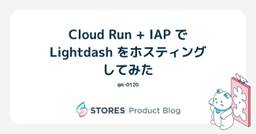
Cloud Run + IAP で Lightdash をホスティングしてみた 2
STORES Product Blog
はじめに \ｺﾝﾆﾁﾊ/ STORES株式会社でアナリティクスエンジニアをやっているk-0120です。突然ですが、BIツールって何を使われてますか？STORES では現在 Metabase という BIツールを利用しています。GUIによるクエリ生成や各種ビジュアライゼーションなど、所謂BIツールに必要な機能は網羅されているのですが、非エンジニアが自走して使うには JOIN や GROUP BY の概念を理解する必要があり、ややハードルが高いという印象があります。 そこで、より直感的にデータを扱え、dbtとの親和性も高いLightdashというBIツールに注目し、まずは検証環境を構築してみること…
5日前
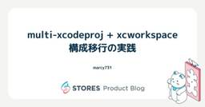
multi-xcodeproj + xcworkspace 構成移行の実践
STORES Product Blog
multi-xcodeproj + xcworkspace 構成移行の実践 はじめに xcodeproj とは？ xcworkspace とは？ この記事で解決すること 背景と課題 STOERS レジ の当初の構成 Build Configuration Stagingで起こっていた問題 Swift Packageの制約 具体的に何が起きるのか？ SwiftUI Previewの問題 ビルド速度の問題 その他の問題 multi-xcodeproj + xcworkspace 構成 考え方 構成の全体像 xcworkspace の役割 複数xcodeprojに分けるメリット 1. Swift P…
5日前
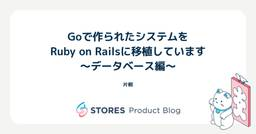
Goで作られたシステムをRuby on Railsに移植しています 〜データベース編〜 1
STORES Product Blog
STORES でエンジニアをしている片桐です。 先日、「Goで作られたシステムをRuby on Railsに移植しています」というブログを投稿させていただきました。 product.st.inc ベース部分の実装について別ブログで紹介したいと書かせていただきましたが、今回はその中から「複数データベースの設定」について紹介させていただきます。 作業の全体像 移植先のシステムから移植元のシステムのデータベースを扱えるようにするに当たって、行わなければならない作業は大きく3つありました。 移植先システムから移植元システムのデータベースにアクセスできるようにインフラ構成を変更する。 移植先システムに移…
5日前
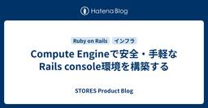
Compute Engineで安全・手軽なRails console環境を構築する
STORES Product Blog
こんにちは、エンジニアのokuboです。このブログでは、Rails console用のサーバをCompute Engine上で安全かつ手軽に運用する手法をご紹介します。 モチベーション 現在STORESでは、いくつかのRailsアプリケーションをGoogle CloudのCloud Run上で稼働させています。 Cloud Runはその仕様上SSH接続ができないためrails consoleが利用できません。 開発・運用効率の向上のために何とかrails consoleが使いたいと考えましたが、スタンダートと言えるほどの手法がなく、手探りでいくつかの選択肢を出して検討しました。 web con…
5日前
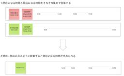
モバイルオーダーの予約システムで複雑な時間の計算を集合演算で解決した
STORES Product Blog
こんにちは、Webアプリケーションエンジニアのsomeziです。 皆さんは予約システムをつくったことはありますか？私は現在モバイルオーダーを開発しており、その中で時間を指定せずに最短で受け取れるように注文する「即時注文」と、あらかじめ決められた時間に受け取るように注文する「予約注文」をつくりました。 本記事では、即時注文と予約注文を実装する際に「このパターンでこの時間注文できるんだっけ？？」と何度も混乱した経験から、時間の集合演算というアプローチでリファクタリングすることで技術的に乗り越えた話を紹介します。 ※世間一般でイメージする予約システムとはちょっと違いますが、広義の意味では予約システム…
5日前
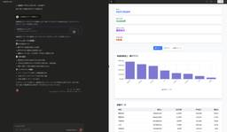
BigQuery MCPサーバーを作ってみる
STORES Product Blog
はじめに はじめまして。 データ本部でデータエンジニアをやっている@takaHALです。 最近、MCP（Model Context Protocol）を活用した様々なツールが登場し、ClaudeやCursorなどのAIツールでできることが急速に拡大していますよね。 今回は、MCPへの理解を深めるため、実際にMCPサーバーを作ってみることにしました。弊社STORESではデータウェアハウスとしてBigQueryを使用しているので、BigQueryにアクセスできるMCPサーバーの実装に挑戦します。 今回作るもの 作成するMCPサーバーでは、最終的にClaudeDesktopから以下の3つの操作ができ…
5日前
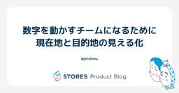
数字を動かすチームになるために──現在地と目的地の見える化
STORES Product Blog
はじめに こんにちは、STORESの西村（@jnishimu）です。 STORES（ストアーズ）では、2025年3月から、キャッシュレス決済・POSレジ・ネットショップ・予約システム・モバイルオーダーなどを “まとめて” 使える新しいプラン「スタンダードプラン」を開始しました。これに伴い、「このプランを世の中の中小事業者の“スタンダード”にしていく」という大きな目標のもと、2025年4月から社内の横断プロジェクトが立ち上がりました。 マーケティング、セールス、カスタマーサクセス、プロダクトマネージャー、エンジニアといった多職能のメンバーが連携しながら進めていくこのプロジェクトにおいて、私たちデ…
5日前
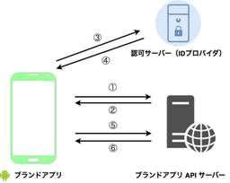
ブランドアプリの ID 基盤移行に向けた Cookie 管理の仕組みの実装 1
STORES Product Blog
はじめに こんにちは。STORES ブランドアプリで Android エンジニアをしている Yuto Koguchi (@10llip0p) です。 STORES では現在 ID 基盤の統一に取り組んでおり、複数のプロダクトへ共通のアカウントでログインしてシームレスに利用できる体験を目指しています。 私が担当するブランドアプリにおいても今年からこの新しい ID 基盤への移行に取り組んできました。 STORES の ID 基盤とセキュリティ観点 STORES では Open ID Connect (OIDC) に準拠した ID 基盤を自前実装しており、様々なプロダクトやサービスに導入を進めていま…
5日前
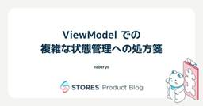
ViewModel での複雑な状態管理への処方箋
STORES Product Blog
こんにちは！Android エンジニアの naberyo（@error96num）です。 私が現在開発に携わっている STORES モバイルオーダー では、モバイルオーダーから入った注文を飲食店のキッチンで管理するための「キッチンディスプレイアプリ」をネイティブアプリとして提供しています。*1 本記事では、このキッチンディスプレイアプリの ViewModel をリファクタした話について共有します。 背景 ─ 機能追加による UI のリッチ化 キッチンディスプレイアプリには、モバイルオーダーで入った注文を一覧表示する機能があります。これまでは即時注文（今すぐ受け渡す注文）しか扱わなかったため、画…
6日前

Goで作られたシステムをRuby on Railsに移植しています
STORES Product Blog
STORES でエンジニアをしている片桐です。 STORES では店舗運営に関するさまざまなプロダクトを提供しています。これらのプロダクトは元々別の会社で運営されてきた完全に異なるプロダクト群で、アカウント体系から全く異なるシステムになっていました。近年はこれらのシステムを本格的に統合する取り組みを進めてきており、その中で統合のためにいくつかのシステムが新たに作成されてきました。 ある程度統合が進み、うまくいったところ・いかなかったところが見えてきた中で、これまでに作ったシステムの技術選定・システムの役割に対する課題感が見えてきました。 現在弊社ではこの課題を解決していくプロジェクトを進めてい…
8日前
EC・POSレジのプラン購読の仕組みをZuoraに移行した話
STORES Product Blog
はじめに はじめまして。STORES でエンジニアをやっている id:shu-suzuki-1124 です。 競馬では例年より早く宝塚記念が開催されたため春のG1もすべて終わり、新馬戦や夏競馬が本格的に始まってきました。 未来への可能性に期待膨らむ新馬戦、波乱万丈で刺激的な夏競馬、私はG1も好きですがこの季節もまた別の趣があってとても好きです。 思えば私が STORES に入社したのも去年の夏頃でした。そして STORES で働いたこの1年はまさしく未来に胸踊らせつつ刺激的な1年だったと感じています。 なのでこの1年に郷愁を感じつつ、その中でも今年の1~3月で参画した STORES ネットショ…
8日前
約30行でできる！Jetpack Composeで作るサイン画面
STORES Product Blog
はじめに こんにちは！ STORES 決済 でAndroidアプリの開発をしているchukaです。 最近は美味しいパンを食べることにハマっています。 美味しいパン屋さんを知っている方は、ぜひ教えてください 🥐 🍞 🥖 🥯 Jetpack Composeでサインをしよう みなさんは、クレジットカードでの支払い時にサインを求められた経験はありますか？ STORES 決済 でも、クレジットカードで決済されたとき、アプリ上でサインをしてもらう場合があります。*1 でも、Jetpack Composeでサイン画面を作るのってなんか難しそう・・・と思いませんか？(私は思っていました) 実はそのサイン画面、…
9日前
PCI DSS v4.0 に準拠するために CSP レポート分析基盤を構築しました
STORES Product Blog
STORES 技術推進本部の id:atpons です。普段は STORES 全体の技術課題をいい感じにしたり、パブリッククラウドの管理、運用をしています。 今回は STORES ネットショップで PCI DSS v4.0 に準拠するにあたり必要となった CSP レポートの分析システムについて、さまざまな検討を行った結果、内製することにした経緯を紹介します。 CSP レポートとは Content Security Policy（CSP）は、Web サイトのセキュリティを向上させるためのセキュリティ機構です。CSP ヘッダを設定すると、ブラウザ上で読み込まれるリソース（スクリプト、スタイルシート…
9日前
プロダクト開発と伴走するデータ活用
STORES Product Blog
はじめに こんにちは。STORES株式会社でデータアナリストをしています、satoyuです。 STORESでは2025年3月に新たな料金プランを発表・リリースしました。またリリースに合わせて、事業者がSTORES製品を使い始める際のオンボーディングフローを統合しました。これにより、各製品ごとの開設オンボーディングが不要になり、1つのSTORES製品として利用開始できる環境が整いました。 しかし、新しいオンボーディングフローの導入により、以前と比較して体験が悪化していないか、オンボーディング中に事業者の離脱がないかなど、プロダクトリリース後の評価において考慮すべき点が複数生じました。 このような…
9日前
セッションストアをValkey Serverlessへ移行してみたら、パフォーマンスもコストも大きく改善した話
STORES Product Blog
こんにちは、技術推進本部のシムです。 今回は最近実施したセッションストアのValkey Serverless移行について、なぜ移行を決めたのか、実際の移行プロセスや成果、運用で得られた知見を紹介します。 ここでのセッションストアとは STORES ネットショップの本体は Rails で動いており、該当アプリケーションのセッションストアを指します。 元々は MemoryDB (with Redis OSS) をストレージとして利用しており、該当クラスタにはセッションに関係するデータも一部追加で保存されておりました。 なぜ Valkey Serverlessに移行したのか？ ここには Server…
9日前
STORES アカウントにsidを導入しました
STORES Product Blog
こんにちは。エンジニアのokuboです。このブログではSTORES アカウントのsid導入およびsidを利用したBack-Channel logoutの実装について、実際の開発現場での課題や仕様、実装例、得られた知見を紹介します。 モチベーション STORESは複数の独立したサービスで構成されています。事業者様は、同一のSTORES アカウントでこれらのサービスにログインし、サービス間を遷移しながら日々の業務を行っています。 STORES アカウントによる認証機能は、STORESが自社開発しているID基盤システムによって提供しています。 STORES アカウントでは、サービス間を移動する際にロ…
9日前
Webhook の重複処理実行を回避してシステムの信頼性を高める
STORES Product Blog
こんにちは、STORES ブランドアプリ や STORES ロイヤリティ の開発をしている ta-chibana です。 STORES では複数のサービスが通信しあうことで実現される機能が多くありますが、STORES で開発されたプロダクト同士の連携に限らず、Shopify などの外部サービスと連携する機能も存在します。 本記事では STORES での Shopify 連携で実装した Webhook の重複処理実行を回避する仕組みについて紹介します。 なお、STORES での Shopify 連携においては shopify_app gem を利用しているため、その前提での実装例となります。 W…
9日前
AIサービス導入時にまずチェックすべき3つの観点
STORES Product Blog
AI導入推進担当者が、AIサービス（特にAIを用いたコーディングツール）導入時にまずチェックすべき3つの観点をまとめています。
9日前
TRICK 2025 の mame のプログラムを語る
STORES Product Blog
こんにちは、遠藤（@mametter）です。RubyKaigi 2025 では、変なコードで競い合う TRICK 2025 を開催しました。あらためまして、たくさんの投稿をいただき、本当にありがとうございました。 いまさらですが、自分が書いたプログラムについて語りたくなったので語ります。 Most Useful github.com 概要 patch と diff をテーマとして、とにかくたくさんの要素を詰め込んだプログラムです。 patch コマンドとして動く そのまま patch ファイルとしても解釈できる 自分自身へのパッチを出力し、中心にある "p" のロゴを徐々に半回転して "d" …
10日前
Compose Multiplatform における iOS ネイティブ実装の取り組み
STORES Product Blog
こんにちは。STORES でiOSエンジニアをしている榎本 (@enomotok_ )です。 STORES では、 KMP/CMP を用いて Android, iOS のマルチプラットフォームアプリ開発を行なっています。 *1 本記事では、Kotlin Multiplatform（KMP）と Compose Multiplatform (CMP) を用いたアプリ開発において、iOS と Android 間で共通化が難しい処理をどのように設計・実装しているか、私たちのチームの事例を紹介します。 Kotlin の共通実装だけではカバーできない領域をどのように解決するか KMP/CMP を活用するこ…
10日前
クエリを用いたプロダクトの値決めシミュレーション
STORES Product Blog
こんにちは、STORES でデータアナリストをしているsueshigeです。 STORES では2025/3から従来のプロダクト単位の料金プランとは大きく異なる複数プロダクトをまとめた新料金プランの提供を開始しました。 料金プランを決定するにあたり月額料金と決済手数料を合わせて値決めをするのは難しい問題で、インプット項目の集計からシミュレーションまでをスプレッドシートなどを使って人力で行う方法には限界がありました。そこでクエリを用いることで値決めのシミュレーションを効率的に行うことができたのでその方法を共有します。 シミュレーション方法 プロダクトの値決めで重要となるのは新しい料金体系をいくら…
10日前
意外と知らないホームアプリの作り方
STORES Product Blog
夏のような日差しの日があったり、大雨の日があったり、忙しい天候ですね。子どもたちと昆虫採集に行く機会が増えてきたのですが、飛んでいる虫はなかなか捕まえられず、思い付きで虫取り網をDIYしました。アルミワイヤーで枠を作り、網部分は洗濯ネットをぬい付けました。作ってみるとわかるのですが、市販の網は枠と持ち手の接合部分にかなりの工夫がありました。自作の方はまだまだ改良の余地ありです。 こんにちは。STORES 決済 でAndroidアプリエンジニアをしている Yamaton です。今回は、とあるプロジェクトの過程で調査した「ホームアプリの作り方」をまとめます。調査しているとホームアプリの仕組みがわか…
11日前
プルリク数を増やすために考えたこと、やったこと、思ったこと。
STORES Product Blog
開発速度を上げよう こんにちは、STORES 決済 Androidエンジニアのみっちゃんです。 2025年上期、STORES テクノロジー部門では、目標の一つに「開発速度向上」を掲げていました。 この方針を踏まえ、個人としてどのような目標を立てるか考えた際、自分のプルリクエスト（以下、PR）数が少ないことを以前から課題に感じていたこともあり、「PR数の増加」を個人目標として設定することにしました。 具体的には、100件のPR提出を目指すという数値目標を立てました。 ちなみに私の去年下期(2024/07/01~2024/12/31)のPR数は49個です。 これを読んでいる人の中には「え？あなた本…
11日前
決済アプリの SwiftUI 導入に伴う取り組み 〜 アーキテクチャ変更について 〜
STORES Product Blog
はじめに @kotetu こと栗山です。今年の 4 月に STORES に入社しました。今回が、入社して初めての担当記事となります。 今回は、筆者が開発を担当している STORES 決済 の iOS アプリ (以後、 "決済アプリ" と記載) の開発チームで現在進行形で実施している取り組みについて、筆者が対応したとある案件で実際に経験したことや入社 2 ヶ月半の立場からの所感をベースに紹介します。 とある画面のアーキテクチャ変更対応 決済アプリでは、2025 年から SwiftUI の導入を徐々に進めており、一部画面については画面実装が SwiftUI ベースとなっています。 SwiftUI …
12日前